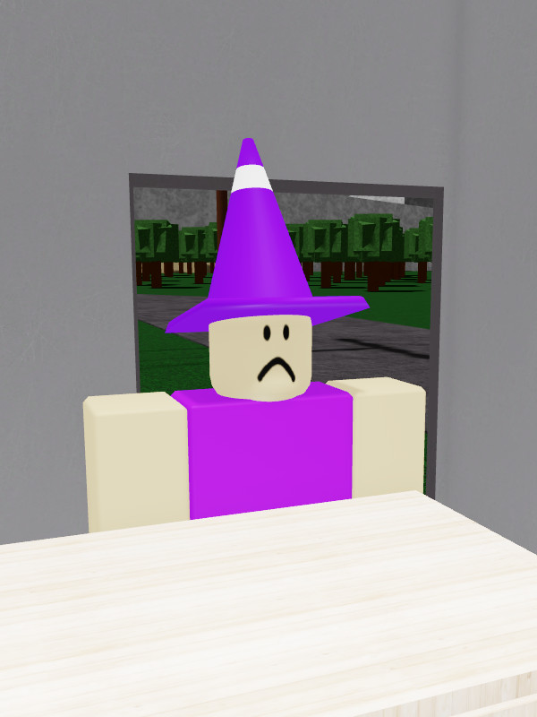

Lawrence Henderson

Not to be mistaken with Magenta.
Lawrence is one of the most notable characters of Test Place: Classics. He has a light-purple shirt, green trousers and a purple cone with a white stripe on his head. He has a frown on his face.
Lawrence is one of the most notable characters of Test Place: Classics. He has a light-purple shirt, green trousers and a purple cone with a white stripe on his head. He has a frown on his face.
Trivia
• Lawrence works for an unnamed hotel company.
• Lawrence does not like players going through the hotel's backdoor. He will violently punch the player away if you try to do so.
• Lawrence will politely apologise for punching a customer away, stating that "we have lost a customer", and will wish for them to get better soon.
• Lawrence has a briefcase with stealable money next to him.
• If you steal the money from the briefcase, Lawrence will have no reaction.
• Lawrence is credited in TPCL's ending.
• Lawrence is aware of the simulation.
• Lawrence does not like players going through the hotel's backdoor. He will violently punch the player away if you try to do so.
• Lawrence will politely apologise for punching a customer away, stating that "we have lost a customer", and will wish for them to get better soon.
• Lawrence has a briefcase with stealable money next to him.
• If you steal the money from the briefcase, Lawrence will have no reaction.
• Lawrence is credited in TPCL's ending.
• Lawrence is aware of the simulation.